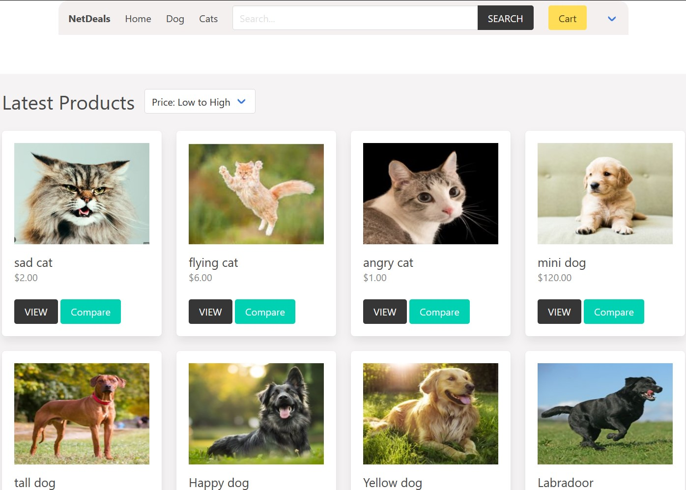

Net Deals
Janurary 2023 - May 2023



Technologies Used
Summary
Created an e-commerce web application with the Django framework in a 3-person team while applying the Agile development life cycle in my Intro to Software Engineering course. The web application has standard functionality such as creating accounts for buyers, sellers, and admin users, creating and adding product listings to user's shopping cart, and tracking product inventory for the seller accounts.
Goals
- Take on the role of a software engineer in a team setting and apply four sprints throughout the lifecycle.
- Buyers, sellers, and admin accounts must be able to log in and have different utilities.
- Buyer accounts can leave product ratings and check out items in their shopping carts.
- Seller accounts can add and edit product listing's name, description, image, price, and category.
- Admin accounts can add and approve new user accounts and oversee users' actions.
- Site functionality like searching, comparing, buying, and returning items on the site.
Constraints
- The primary focus was on functionality due to the restricted time in each phase of the life cycle.
- Can only handle a limited number of data due to storing it in SQLite.

Details
The project is divided into four sprints, each consisting of planning, design, coding/testing, and implementation phases.
Sprint 1: Planning
- During sprint 1, I gathered and sorted requirements for the application from the project stakeholders into a software specification document.
- A Software Requirements Specification (SRS) document describes what the software will do, how it is expected to perform, its limitations, and how it will accomplish stakeholder goals. Using an SRS ensures that every individual involved in the development process understands what needs to be built.
Sprint 2: Design
- In sprint 2, I developed user stories for some system features to define user requirements.
- User stories are brief descriptions of a software feature from the perspective of the end user who will interact with the software.
- Also, in sprint 2, I designed two diagrams. The Model-View-Controller (MVC) Architecture diagram and UML Class diagrams.
- The architecture diagram demonstrates the interactions between different parts of the Model-View-Controller (MVC) system. It shows how the Controller handles user requests, how the Model retrieves the data, and how the View displays this data to the user.
- In the diagram below, the browser requests data from the controller. The controller then fetches the data from the model, which retrieves that data from an external database, such as SQLite. Once the model has retrieved the data, it is sent back to the controller. Finally, the controller displays the data to the view, which is the front-end HTML content.
- The Unified Modeling Language (UML) class diagram showcases the relationships between each class in the software.
- In the diagram below, the User class acts as a superclass, providing its attributes (variables) and methods (functions) to the subclasses Login, Buyer, Seller, and Admin. The Buyer class can create one or more instances of the Order, Cart, and Listing classes for each user. This also applies to the seller class, which creates one or more instances of the Listing class.
Sprint 3: Coding Phase
- In sprint 3, I developed and integrated several backend features including return listing, forgot password, and order history to enhance software functionality.
- Afterward, I wrote unit tests using Django’s built-in unit testing library to ensure code reliability and performance.
Sprint 4: Implementation Phase
- Ran the Pylint static analysis tool to assess software quality to ensure it adheres to coding conventions.
- Verified all the application requirements from the Software Requirements Specification Document and the User stories to see if all features matched the user’s expectations.
Challenges
- Managing time effectively while implementing features on the website and balancing other classes and projects.
- Limited knowledge of the Django framework. Difficult time implementing features due to limited understanding of the framework.
- Learning how to manage priorities, assisting teammates with struggles, and communicate effectively.
Lessons Learned
- You don't need to know everything about the technology that you are working with, only the details to accomplish the task effectively.
- Manage tasks based on priority and due date. Allocate more time to issues that you don't understand or having a difficult time implementing.
- Checking up on teammates can provide new perspectives to accomplish a task and overcome project struggles.
Contributors
Tags
- #Web Development
- #Django Framework
- #Python
- #HTML
- #CSS
- #JavaScript
- #SQLite
The use of programming languages, organizational, and technology logos on this site is solely for demonstrating the relevant technologies and complies with the respective brand guidelines. The organizations referenced do not affiliate with, sponsor, or endorse any content, project, or application on this site.